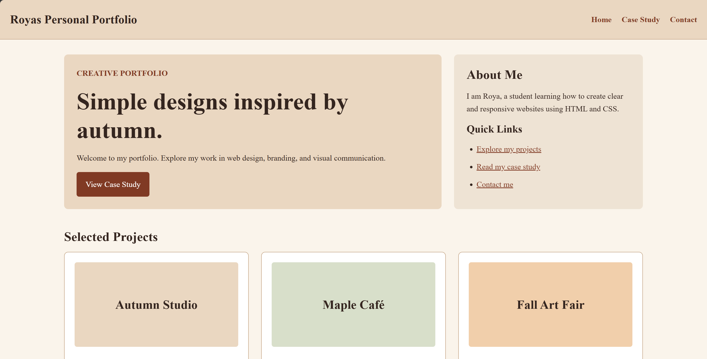

The Challenge
The main challenge was to present several types of creative work without making the homepage feel crowded. Visitors needed to understand the studio's identity, browse its projects, and reach a detailed case study through clear navigation.
The layout also needed to adapt to different screen sizes. Content displayed beside other sections on desktop had to remain readable and easy to follow when stacked on mobile.
The Solution
The homepage begins with a prominent introduction and a direct link to the featured case study. A smaller section introduces the designer and provides quick links to the projects and contact information.
Below the introduction, project cards organize the work into separate, easy-to-scan items. Each card includes a project title, a short description, and a link to further information. The dedicated case study page provides space to explain the design decisions while keeping project details in a sidebar.

Branding Approach
The visual identity uses cream, rust, and brown to create a warm and consistent appearance. Cream backgrounds provide a calm setting for the content, while rust-coloured buttons draw attention to the main actions.
Design and Layout
The desktop homepage uses an asymmetric two-column layout, giving the main introduction more space than the supporting information. The project gallery uses a flexible grid so the cards can adjust to the available screen width.
On the case study page, the main article occupies the wider column, while the narrower sidebar contains the date, category, designer, and tools. This separates the project narrative from information visitors may want to scan quickly.
Results and Key Outcomes
The completed concept brings together a showcase homepage and a dedicated case study page through shared navigation and consistent styling. Visitors can move from the project gallery to a more detailed explanation and return to the selected work using a clear link.
The project demonstrates how HTML, CSS Grid, and Flexbox can support a structured portfolio across mobile and desktop layouts. Future improvements could include replacing the remaining visual placeholders with original project images and gathering feedback from users on the navigation and readability.
Back to Projects